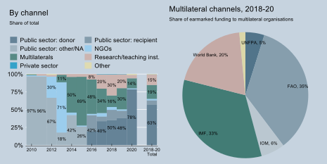

Modalities and Channels of Delivery
Between 2018 and 2020, most of Germany’s ODA to data and statistics was provided in the form of project-type interventions (83%) and pooled funding and contributions to specific programmes of implementing partners (14%) (Figure 6).
Figure 6: Germany – ODA to data and statistics by type of aid, 2010 – 2020

Note: Based on share of total ODA gross disbursements. NGO: non-governmental organisation; PPP: public-private partnership; TA: technical assistance.
Between 2018 and 2020, Germany’s support was channelled through public-sector entities in Germany and in partner countries (63%), research and teaching institutions (15%) and multilateral organisations (i.e. multi-bi; 19%), with key partners including the IMF, the FAO and the World Bank (Figure 7). There is an interesting trend in that support at the beginning of the decade was mainly channelled through public-sector entities, while multilateral organisations were the dominant channel in 2014-16. Support to research and teaching institutions increased thereafter. An important partner in this last category is the Center for International Forestry Research, a non-profit organisation that conducts scientific research on the use and management of forests.
Figure 7: Germany – ODA to data and statistics by channel

Note: Based on share of total ODA gross disbursements. NA: not applicable; NGO: non-governmental organisation; FAO: Food and Agriculture Organization; IMF: International Monetary Fund; IOM: International Organization for Migration.
Box 1. Germany – related documents and contacts
Strategies, project documents, evaluations
BMZ (2021): Digitalisierung als Innovationstreiber in der Entwicklungszusammenarbeit (only available in German).
BMZ (2020): BMZ 2030 reform strategy | New thinking – new direction
BMZ (2019):Digitalisierung für Entwicklung* (engl: Digital technologies for development) – Den digitalen Wandel gemeinsam gestalten (in German)*
BMZ (2018): Development policy 2030 | New challenges – new solutions
GIZ, IDS, World Wide Web Foundation (2017): Data for development: What’s next?
GIZ project (2018-21): Civil registration in Cameroon is being modernised
GIZ project: Digital change in development cooperation
GIZ Project: Support for national climate change adaptation plans in French-speaking sub-Saharan Africa
GIZ project (2016-24): An environmental registry is protecting the Amazon rainforest
GIZ project (2015-19): Integrated Biodiversity Management in the South Caucasus
FAO: Global Forest Survey
FAO: Global Information System on Plant Genetic Resources for Food and Agriculture (PGRFA)
Partners for Review, Danish Institute for Human Rights and the International Civil Society Centre (2021): Lessons Learned Report: Advancing Inclusive SDG Data Partnerships
Destatis (2016): International co-operation (in German). In: Strategie- und Programmplan 2016-2020
Contact
- BMZ, Governance unit